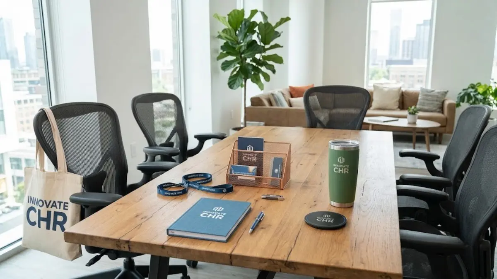

Konsep ini mengutamakan fungsi praktis di atas nilai dekoratif, sehingga barang yang dibagikan tetap relevan digunakan jauh setelah acara pembagian berlangsung.
Pendekatan office essentials banyak dipilih perusahaan karena dianggap lebih efisien dari sisi anggaran promosi. Barang yang terus dipakai setiap hari memberikan eksposur logo brand secara berulang, dibandingkan merchandise yang hanya dilihat sekali lalu disimpan.
Mengapa Merchandise Fungsional Lebih Efektif untuk Penggunaan Sehari-hari?
Merchandise yang fungsional cenderung memiliki tingkat pemakaian ulang yang lebih tinggi dibandingkan barang dekoratif atau musiman. Sebuah pulpen, notebook, atau tumbler yang nyaman dipakai akan terus digunakan penerimanya di meja kerja, ruang rapat, atau bahkan di luar kantor.
Selain faktor pemakaian ulang, merchandise fungsional juga cenderung dianggap lebih bermanfaat oleh penerima, sehingga persepsi terhadap brand yang membagikannya pun menjadi lebih positif dibandingkan barang yang dianggap kurang praktis.
Daftar Merchandise Office Essentials yang Paling Diminati
Berikut beberapa kategori produk office essentials yang umum dipilih perusahaan untuk kebutuhan merchandise kantor custom.
- Notebook dan buku agenda custom menjadi pilihan dasar karena hampir selalu dibutuhkan dalam aktivitas rapat maupun pencatatan harian. Sampul dapat disesuaikan dengan warna korporat, dan halaman dalam dapat ditambahkan elemen brand secara halus, seperti header berlogo pada setiap lembar.
- Pulpen dan alat tulis custom merupakan merchandise paling ekonomis namun memiliki tingkat pemakaian yang sangat tinggi karena selalu dibutuhkan di meja kerja maupun saat rapat dengan klien.
- Tumbler dan botol minum custom semakin populer karena mendukung kebiasaan membawa minuman sendiri, sekaligus memberikan eksposur logo brand baik di dalam maupun di luar kantor.
- Mousepad dan aksesori meja kerja custom cocok untuk karyawan yang bekerja dengan komputer sepanjang hari, dan menjadi pengingat visual brand yang berada tepat di depan mata penggunanya.
- Tote bag custom banyak dipakai untuk membawa dokumen, laptop, atau perlengkapan pribadi, sekaligus berfungsi sebagai media promosi berjalan saat dibawa keluar kantor.
- Lanyard dan ID card holder custom dibutuhkan hampir di setiap perusahaan untuk identitas karyawan, sehingga penempatan logo pada aksesori ini memberikan eksposur brand yang konsisten setiap hari.
- Power bank dan flashdisk custom dipilih perusahaan yang ingin memberikan merchandise dengan nilai fungsional lebih tinggi, terutama untuk klien atau mitra bisnis pada acara tertentu.
- Desk organizer custom membantu merapikan meja kerja sekaligus menjadi elemen branding yang halus namun konsisten terlihat setiap hari oleh penggunanya.

Bagaimana Memilih Produk Office Essentials yang Sesuai dengan Budaya Kerja Perusahaan?
Pemilihan produk office essentials sebaiknya disesuaikan dengan gaya kerja dan kebiasaan sehari-hari karyawan atau target penerima merchandise.
Perusahaan dengan budaya kerja mobile dan sering bertemu klien di luar kantor cenderung lebih diuntungkan dengan produk seperti tote bag, power bank, atau botol minum yang praktis dibawa bepergian.
Sementara itu, perusahaan dengan budaya kerja berbasis meja dan rapat internal yang intensif biasanya lebih cocok memilih notebook, alat tulis, atau aksesori meja kerja yang mendukung aktivitas administratif sehari-hari.
Tips Kustomisasi agar Barang Terlihat Profesional
Kustomisasi yang baik pada merchandise office essentials sebaiknya tetap mengutamakan kenyamanan penggunaan, bukan hanya menonjolkan logo secara berlebihan. Penempatan logo pada posisi yang proporsional, misalnya di sudut produk atau pada bagian yang tidak mengganggu fungsi utama barang, umumnya memberikan kesan lebih profesional dibandingkan logo berukuran besar yang memenuhi seluruh permukaan.
"Pemilihan warna produk yang selaras dengan identitas brand juga penting diperhatikan, sehingga merchandise tetap terlihat serasi meskipun dipakai bersamaan dengan barang lain di meja kerja."
— Anggun Tri Stya, Penulis Merchandise Kantor

Kesimpulan
Konsep office essentials pada merchandise kantor custom menekankan pentingnya fungsi praktis dibandingkan sekadar nilai dekoratif.
Produk seperti notebook, alat tulis, tumbler, tote bag, dan aksesori meja kerja terbukti memberikan eksposur brand yang lebih berkelanjutan karena dipakai berulang dalam aktivitas kerja sehari-hari.
Dengan pemilihan produk yang sesuai budaya kerja dan penempatan logo yang proporsional, merchandise office essentials dapat menjadi media branding yang efektif sekaligus bermanfaat bagi penerimanya.